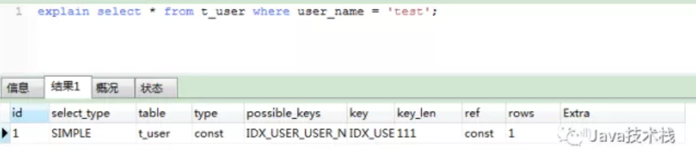

mysql查询优化的方法有很多种，explain是工作当中用的比较多的一种检查方式。explain翻译即解释，就是看mysql语句的查询解释计划，从解释计划我们能很清楚的看到解释的语句有没有合理用到索引，扫描了多少行数，有没有触及全表扫描、用到临时表等影响慢查询的原因。
|
|
执行后会出现解释计划的表格，意义可参考下面的参数，针对这些解释计划，我们可以作为相对应的优化。

id mysql查询标识符，即序号
select_type 查询类型
- simple：即简单select 查询，不包含union及子查询；
- primary：最外层的 select 查询；
- union：表示此查询是 union 的第二或随后的查询；
- dependent union：union 中的第二个或后面的查询语句, 取决于外面的查询；
- union result：union的结果；
- subquery：子查询中的第一个select；
- dependent subquery：子查询中的第一个select，取决于外面的查询，即子查询依
table 所有查询到的表。
type 联接类型，比较重要的项，从这一项可以看出是否高效的重要依据, 性能从好到坏依次如下：
- system：表中只有一条数据，这是一个特殊的const 类型；
- const：针对主键或唯一索引的等值查询扫描，最多只返回一行数据，const 查询速度非常快，因为它仅仅读取一次即可；
- eq_ref：此类型通常出现在多表的 join 查询，表示对于前表的每一个结果,都只能匹配到后表的一行结果，并且查询的比较操作通常是＝, 查询效率较高；
- ref：此类型通常出现在多表的 join 查询, 针对于非唯一或非主键索引, 或者是使用了 最左前缀 规则索引的查询；
- fulltext：全文索引检索，要注意，全文索引的优先级很高，若全文索引和普通索引同时存在时，mysql不管代价，优先选择使用全文索引；
- ref_or_null：与ref方法类似，只是增加了null值的比较。实际用的不多；
- unique_subquery：用于where中的in形式子查询，子查询返回不重复值唯一值；
- index_subquery：用于in形式子查询使用到了辅助索引或者in常数列表，子查询可能返回重复值，可以使用索引将子查询去重；
- index_merge：表示查询使用了两个以上的索引，最后取交集或者并集，常见and,or的条件使用了不同的索引，官方排序这个在ref_or_null之后，但是实际上由于要读取所个索引，性能可能大部分时间都不如range；
- range：表示使用索引范围查询，通过索引字段范围获取表中部分数据记录。这个类型通常出现在 =, <>, >, >=, <, <=, IS NULL, <=>, BETWEEN, IN操作中，此时输出的 ref 字段为 NULL并且key_len字段是此次查询中使用到的索引的最长的那个；
- index：全表扫描，只是扫描表的时候按照索引次序进行而不是行。主要优点就是避免了排序，但是开销仍然非常大，这种情况时, Extra 字段会显示 Using index；
- all：性能最差的情况，使用了全表扫描，系统必须避免出现这种情况。
possible_keys 可能用到的索引。
key 真正用到的索引。
key_len 使用了索引字节的长度。
ref 显示索引的哪一列被使用了。
rows 扫描了多少行数，也是性能评估的重要依据。
extra 额度信息，常见的有以下几种
- Distinct：一旦找到了与行相联合匹配的行就不再搜索了；
- Using filesort：使用了文件排序，性能非常慢，需要优化。
- Using index：查询使用到了索引，列数据是从仅仅使用了索引中的信息而没有读取实际的行动的表返回的，这发生在对表的全部的请求列都是同一个索引的部分的时候。
- Using temporary：使用了临时表排序，性能非常慢，需要优化。
- Using where：表示使用了where进行查询，不是很重要。
- ALL：这个连接类型对于前面的每一个记录联合进行完全扫描，这一般比较糟糕，需要优化。
具体的对执行计划解释可以参考msyql官网：